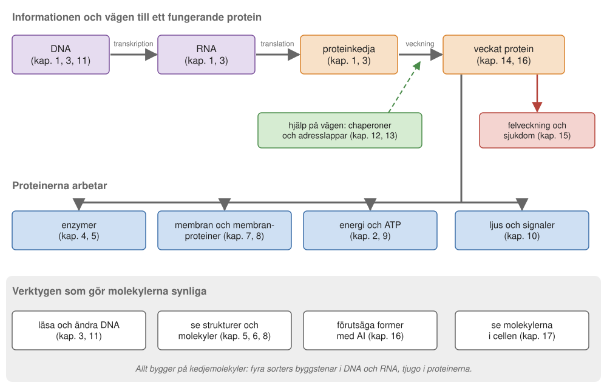
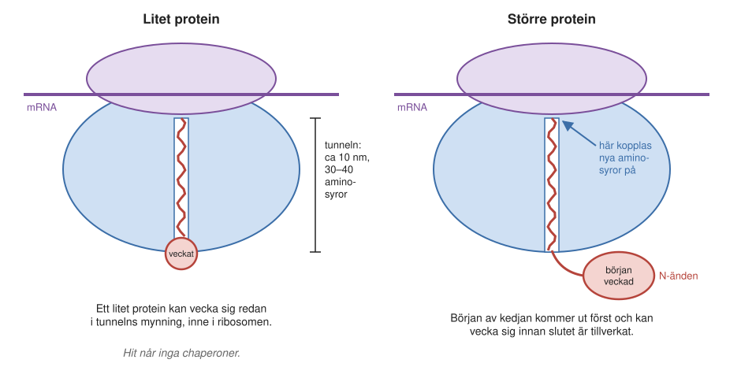
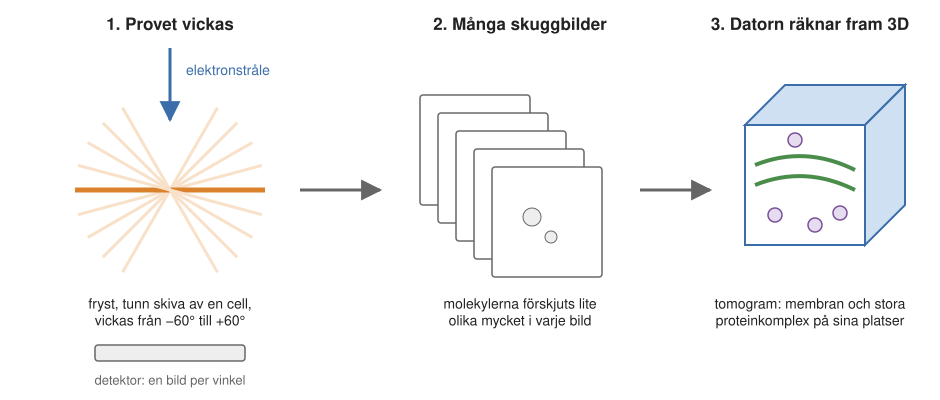
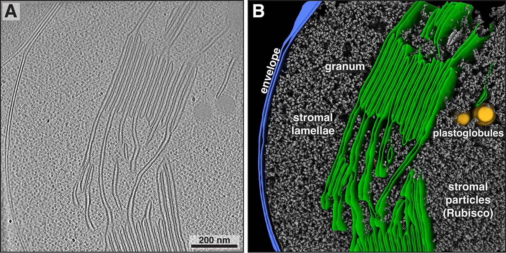
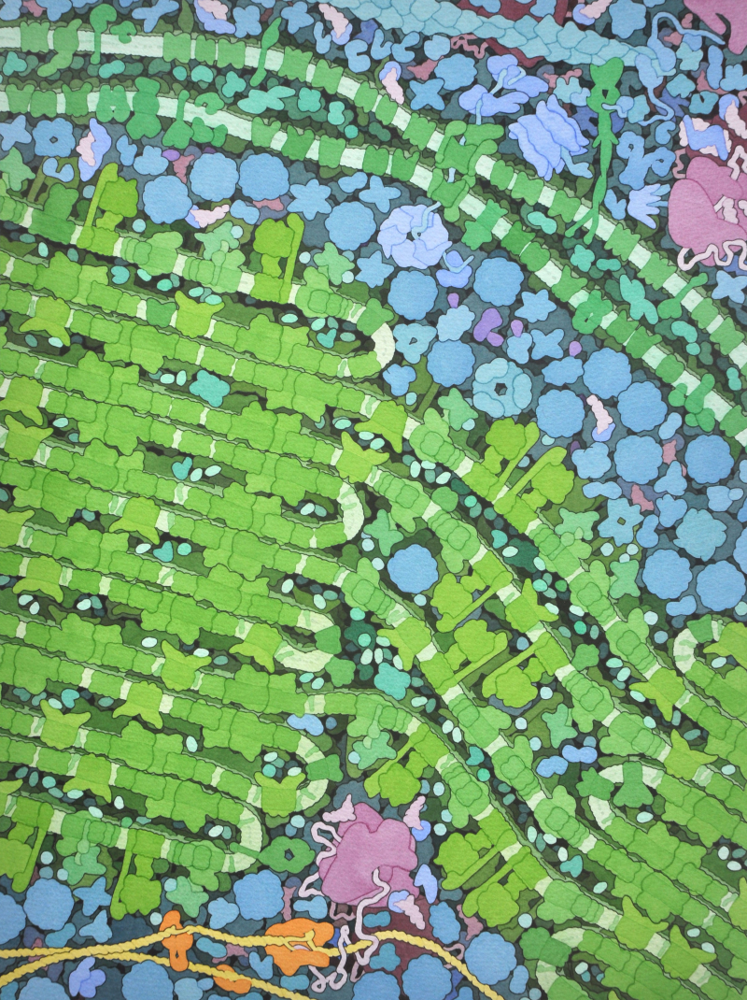
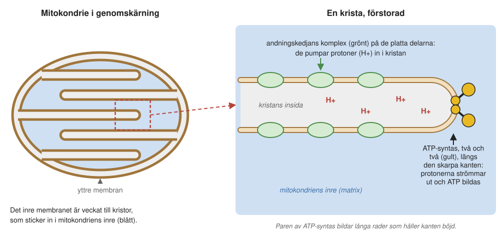
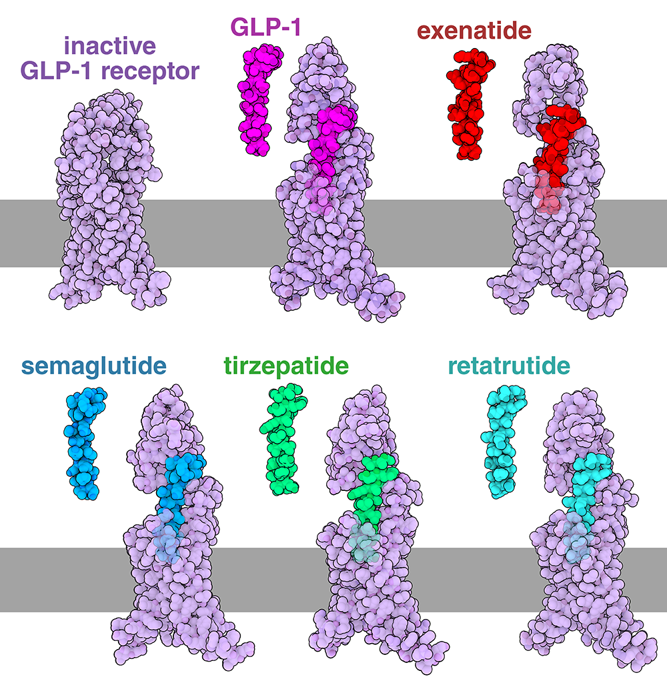
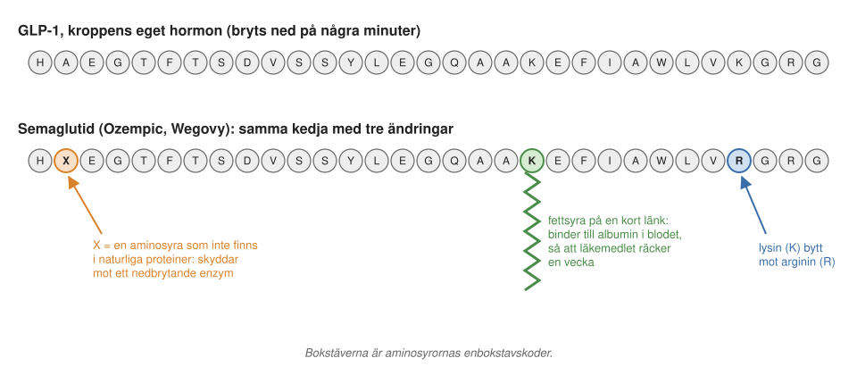
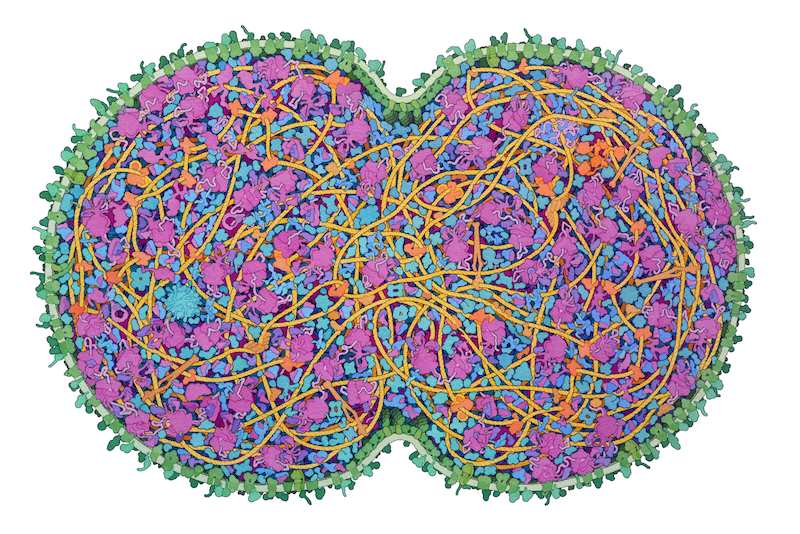

17 Livets molekyler – idag och i morgon
Den 25 april 1953 publicerade James Watson och Francis Crick en artikel på drygt en sida i tidskriften Nature. Där föreslog de att DNA är en dubbelspiral av två strängar som hålls ihop av baspar. Det var startskottet för den molekylära biologin. Det tog sedan nästan femtio år, och tusentals forskare, att läsa av en enda människas arvsmassa. I dag läser en sekvenseringsanläggning i Solna, räknat på hela anläggningen, omkring 20 miljoner baspar i sekunden, och en människas hela arvsmassa kan läsas på någon timme.
Den här boken har följt molekylerna från DNA till fungerande proteiner, och från membran till molekylära motorer. I det här sista kapitlet tar vi ett steg tillbaka. Först knyter vi ihop bokens trådar till en helhet. Sedan ser vi på två exempel på forskning som pågår just nu: hur proteiner veckar sig medan de tillverkas, och hur man kan se molekylerna på plats inne i en cell. Till sist följer vi ett läkemedel, Ozempic, från en idé om diabetesbehandling till en av de mest omtalade medicinerna i världen.
17.1 Den stora bilden
Kapitlen i den här boken har handlat om olika saker: gener, enzymer, membran, motorer, mikroskop och datorprogram. Men de hänger ihop. Figur 17.1 visar hur. Överst går informationens väg, från DNA via RNA till en proteinkedja som veckar sig. I mitten finns det arbete som de färdiga proteinerna utför. Längst ned finns verktygen som har gjort det möjligt att se allt detta.

Allt bygger på kedjor
Den kanske viktigaste principen i hela boken är att livet bygger på kedjemolekyler. DNA, RNA och proteiner är alla långa kedjor av enkla byggstenar (Kapitel 1, Kapitel 2). DNA och RNA har fyra sorters byggstenar vardera, proteinerna tjugo. Eftersom byggstenarna kan sättas ihop i vilken ordning som helst finns det ett i praktiken obegränsat antal möjliga sekvenser. Det är det utrymmet som evolutionen har haft att arbeta i under nästan fyra miljarder år.
Den centrala dogmen beskriver hur informationen flödar: DNA kopieras när cellen delar sig, avsnitt av DNA skrivs av till RNA, och RNA översätts till protein på ribosomen (Kapitel 1).
DNA och RNA har olika uppgifter i flödet, trots att de kemiskt är mycket lika. Skillnaden är en extra syreatom i RNA:s socker och en något annorlunda bas. Men den extra syreatomen gör RNA mindre hållbart, och DNA, som finns som två kompletterande strängar i en dubbelspiral, passar därför bättre för att lagra information. RNA är oftast en enkel sträng som kan vecka sig till varierade former och ibland till och med fungera som enzym.
Eftersom informationen ligger i sekvensen kan den också ändras med avsikt. I dag kan forskare själva skriva sekvenser. Med genteknik kan man få en bakterie att tillverka mänskligt insulin, och med CRISPR-Cas9 kan man ändra arvsmassan på ett bestämt ställe i nästan vilken organism som helst (Kapitel 3). Med datorns hjälp kan man också konstruera helt nya proteiner (Kapitel 5, Kapitel 16).
Från kedja till form
En proteinkedja är inte färdig när den lämnar ribosomen. Den måste vecka sig till rätt form, och formen bestäms av ordningen mellan aminosyrorna (Avsnitt 14.1.1). Den viktigaste drivkraften är att de vattenskygga aminosyrorna samlas i proteinets inre.
Kedjan blir dessutom inte till på en gång, och det får betydelse för veckningen, som vi ska se i Avsnitt 17.2.2. Proteintillverkningen är, med molekylära mått, en långsam process. En ribosom i en bakterie kopplar på 10–20 aminosyror per sekund, och i våra celler går det något långsammare (Avsnitt 1.9.2). Det beror delvis på att ribosomen inte kan veta i förväg vilket tRNA som passar. Olika tRNA kommer slumpvis in och prövas, och fel tRNA släpper igen. Ofta måste många prövas innan rätt tRNA hittar rätt kodon.
Inne i cellen är det mycket trångt, och en nytillverkad kedja kan lätt fastna i fel sällskap. Därför får den hjälp av chaperoner (Kapitel 13), och många proteiner har en adresslapp i kedjan som visar vart de ska i cellen (Kapitel 12).
Ändå går veckningen ibland fel, och då kan proteinerna klumpa ihop sig till fibrer, som vid Alzheimers sjukdom och ALS (Kapitel 15). Veckning och felveckning är två sidor av samma fenomen: samma krafter ligger bakom båda. Oftast fångar chaperonerna upp felveckade proteiner och ger dem en ny chans. Men om några få molekyler ändå hinner klumpa ihop sig kan klumpen fungera som ett frö: nästa protein fastnar lättare på klumpen än det veckar sig rätt, och fibern växer.
Fröet förklarar också vem som drabbas. De flesta fall av sådana sjukdomar är inte ärftliga i första hand. Risken ökar i stället med åldern, eftersom det då har funnits mer tid för ett sällsynt, slumpmässigt frö att bildas.
Proteinerna i arbete
Ett färdigt protein kan vara ett enzym, en katalysator som gör en kemisk reaktion miljontals gånger snabbare (Kapitel 4). Enzymet binder de molekyler som ska reagera, håller dem nära varandra i rätt läge och sänker på så sätt energibarriären, ungefär som platinan i en bils katalysator. En cell kan därför styra sin kemi genom att bestämma vilka enzymer som finns: utan enzymet händer i praktiken ingenting.
Andra proteiner sitter i membranen (Kapitel 7, Kapitel 8). Membranet är ett dubbelt lager av lipider som bara är omkring 5 nanometer tjockt men tätt för joner. Om en cell förstorades till Globens storlek skulle membranet fortfarande bara vara ett par centimeter tjockt (Avsnitt 7.2.2).
Eftersom membranet släpper igenom så lite är det proteinerna i det som bestämmer vad som får passera. Kaliumkanalen har ett filter som väljer jon och en grind som öppnas och stängs. Andningskedjan pumpar protoner över mitokondriens membran, och ATP-syntas, en roterande motor, använder protonflödet till att tillverka ATP (Kapitel 2, Kapitel 9). I fotosyntesen fångar andra membranproteiner ljus och klyver vatten (Kapitel 10). Samma grundprincip, en laddning över ett membran, driver alltså både andningen och fotosyntesen.
Verktygen
Nästan varje steg framåt i boken har berott på ett nytt verktyg. Röntgenkristallografi gav de första bilderna av proteiner atom för atom, och i dag görs mätningarna ofta vid synkrotroner som MAX IV i Lund. Kryoelektronmikroskopi (kryo-EM) har det senaste decenniet gjort det möjligt att se även stora komplex och membranproteiner utan att först få dem att bilda kristaller (Kapitel 5, Kapitel 6, Kapitel 8).
Andra verktyg visar proteinerna i levande celler. Det gröna fluorescerande proteinet GFP och superupplöst mikroskopi låter oss följa proteiner där de arbetar (Kapitel 6). Vanlig ljusmikroskopi kan inte skilja detaljer som är mindre än omkring 200 nanometer, men med superupplösta metoder kommer man ned till några tiotal nanometer.
GFP är också ett bra exempel på nyfikenhetsdriven forskning: Osamu Shimomura ville bara förstå varför vissa maneter lyser. Långt senare insåg andra forskare att proteinet kan fästas vid nästan vilket protein som helst och användas som en lampa (Nobelpriset i kemi 2008).
Samma snabba utveckling har skett inom DNA-sekvenseringen. Frederick Sanger läste DNA några få baser i taget på 1970-talet. I dag läser maskinerna vid SciLifeLab tillsammans omkring 20 miljoner baspar i sekunden, eller omkring 70 miljarder i timmen. För ett pålitligt genom läser man varje bit ett trettiotal gånger, men ändå räcker någon timme för människans genom, som när det publicerades 2001 hade krävt många års arbete (Kapitel 3, Kapitel 11).
Det senaste stora genombrottet är AlphaFold, som sedan 2020 kan förutsäga ett proteins form ur sekvensen på några minuter, nästan lika noggrant som ett experiment (Kapitel 16). Problemet hade då angripits i omkring 60 år, och även för forskare som ägnat livet åt proteinveckning känns det nästan obegripligt att det fungerar. De senaste versionerna kan dessutom förutsäga hur proteinet binder till RNA, DNA och små molekyler som ATP.
Fem idéer som går igen
Om man ska sammanfatta boken i några få meningar kan det bli så här:
- Sekvens. Livets viktigaste molekyler är kedjor, och ordningen mellan byggstenarna bär informationen.
- Form avgör funktion. En proteinkedja veckar sig till en bestämd form, och formen bestämmer vad proteinet kan göra: binda, katalysera, transportera eller signalera.
- Svaga krafter och slump. Molekylerna hittar varandra genom att röra sig slumpvis och hålls ihop av många svaga bindningar. Det gör livet flexibelt men också sårbart, som vid felveckning.
- Membran och gradienter. Membranen avgränsar cellen, och skillnader i laddning och koncentration över dem lagrar den energi som driver mycket av cellens arbete.
- Nya verktyg ger ny kunskap. Från röntgenbilder till AI har varje ny metod visat något som ingen tidigare hade kunnat se.
Resten av kapitlet handlar om forskningsfronten: vad forskare arbetar med just nu, och vart fältet är på väg.
17.2 Forskning i dag: proteiner som veckar sig medan de tillverkas
Det första exemplet på pågående forskning gäller en gammal fråga: hur en proteinkedja hittar sin form. För att se vad som är nytt börjar vi med hur veckning traditionellt har studerats.
Veckning i provröret
Det mesta vi vet om hur proteiner veckar sig kommer från försök med renade proteiner. Ända sedan Christian Anfinsens försök på 1950- och 60-talen (Avsnitt 14.1.1) har man arbetat på ungefär samma sätt. Man tillverkar ett protein, till exempel i bakterier, och renar fram det. Sedan tillsätter man ett ämne som gör att proteinet vecklas upp till en lös kedja. När ämnet tas bort veckar kedjan ihop sig igen, och då kan man följa hur det går till.
Med sådana försök kan man ställa frågor om själva vägen till den färdiga formen. Frågorna är fysikalisk-kemiska. Veckar sig vissa delar av kedjan före andra? Följer alla molekyler samma väg, eller går hälften en väg och hälften en annan? Om man byter ut en enda aminosyra kanske slutresultatet blir detsamma, men vägen dit en annan.
Målet på lång sikt är att kunna förutsäga inte bara proteinets färdiga form, som AlphaFold gör, utan också den väg som kedjan tar för att nå dit. Det är i grunden nyfikenhetsdriven forskning: man vill förstå hur naturen fungerar, utan att i första hand sikta på en tillämpning.
Veckning i cellen
Inne i en cell ser det helt annorlunda ut. Där finns aldrig en färdig, oveckad kedja som veckar sig i lugn och ro. Proteinet tillverkas i stället på ribosomen, en aminosyra i taget, och kedjan växer ut genom en tunnel i ribosomens stora subenhet (Kapitel 1). Tunneln är omkring 10 nanometer lång och rymmer 30–40 aminosyror. De första 30–40 aminosyrorna i ett nytt protein syns alltså inte alls utanför ribosomen.
Eftersom tillverkningen går långsamt kan proteinet mycket väl ha börjat vecka sig långt innan det är färdigt. Tänk på ett protein som är 500 aminosyror långt. När den sista aminosyran kopplas på har de första 450 redan kommit ut ur ribosomen, och med tio aminosyror per sekund har de första av dem haft närmare en minut på sig.
Veckningen måste dessutom börja i ena änden, den så kallade N-änden, eftersom det är den som kommer ut först. I provröret finns ingen sådan ordning: där kan kedjan börja vecka sig var som helst.
Veckning som sker medan proteinet tillverkas kallas kotranslationell veckning (av ko-, tillsammans med, och translation). Det är inte självklart att den följer samma väg som veckningen i provröret, och det är just den skillnaden som von Heijnes forskargrupp och flera andra grupper försöker förstå. Frågan har bara studerats på allvar under de senaste omkring femton åren. I dag tror man att många proteiner, kanske de flesta, börjar vecka sig medan de fortfarande sitter fast i ribosomen.

Att fotografera ett proteins födelse
Hur kan man se något som händer så snabbt och i så liten skala? En väg är kryoelektronmikroskopi (Kapitel 6). Metoden bygger på att stoppa proteintillverkningen vid en bestämd längd. Forskaren kan till exempel bestämma att ribosomen ska stanna när kedjan är 185 aminosyror lång. Sedan renar man fram ribosomerna med de halvfärdiga kedjorna fastsittande, fryser dem och tar bilder i elektronmikroskopet. Man får då en tredimensionell bild av ribosomen med den växande kedjan i tunneln.
I ett sådant försök undersökte gruppen ett litet protein på 49 aminosyror, som i renad form veckar sig till ett betaflak i tre delar och en alfahelix. Frågan var om det kunde vecka sig redan inne i ribosomen. Proteinsyntesen stoppades precis när proteinet var färdigtillverkat, med en kort svans efter. I bilden syntes kedjan löpa från tRNA:t ned genom tunneln, och längst ned, i tunnelns mynning, låg det lilla proteinet färdigveckat. När den kända strukturen lades in i bilden passade den väl. Bilden visar alltså proteinets födelseögonblick.
Att ett protein kan vecka sig inne i ribosomen var ganska oväntat innan det kunde visas. Var veckningen sker beror på proteinets storlek. Bara små proteiner, eller små delar av proteiner, hinner vecka sig i tunneln: en del ännu mindre strukturer veckar sig längre in, medan större proteiner måste komma ut helt innan de kan vecka sig. Inne i tunneln kommer inga chaperoner åt, så där klarar sig proteinet på egen hand. För stora, komplicerade proteiner sker det mesta av veckningen strax utanför tunneln, och där kan chaperonerna vara avgörande (Kapitel 13).
Från grundforskning till sjukdom
Kunskapen om hur proteiner veckar sig har också betydelse för de sjukdomar där veckningen går fel. Felveckning av det slag som ger sjukdomar har ännu inte kunnat ses vid ribosomen. Men andra forskare, bland dem de vars arbete beskrevs i Kapitel 15, studerar hur felveckningen går till. De fibrer som bildas vid till exempel Alzheimers sjukdom kan man i dag strukturbestämma i detalj (Kapitel 15).
De tidiga stadierna, när bara några få molekyler har börjat klumpa ihop sig, är svårare att se och kräver mer indirekta metoder. Ändå är det kanske just där man har bäst chans att ingripa. När stabila fibrer väl har bildats kan det vara för sent, men om man kan hindra de första fröna från att växa, till exempel med antikroppar, kanske sjukdomen kan bromsas.
17.3 Från forskningsfronten
Två andra exempel visar vart fältet är på väg. Det första är en metod som låter forskarna se molekylerna där de sitter i cellen. Det andra är ett läkemedel som bygger på kunskap om ett hormon och den receptor det binder till.
Att se molekylerna på plats: kryoelektrontomografi
Med kryoelektronmikroskopi brukar man studera renade molekyler: tiotusentals likadana ribosomer eller membranproteiner som fryses i en tunn hinna av is (Kapitel 6, Kapitel 8). Men i cellen sitter molekylerna inte ensamma. De ligger packade bland tusentals andra, i membran och i komplex. Hur ser det ut där?
Det är vad kryoelektrontomografi (kryo-ET) kan visa. Principen är densamma som vid skiktröntgen (datortomografi) på sjukhus. Där tar man röntgenbilder av huvudet från många olika håll, och en dator räknar fram en tredimensionell bild av allt som finns inuti.
Vid kryo-ET fryser man en cell, eller en tunn skiva av en cell, så snabbt att allt stannar där det var. Provet måste vara tunt, eftersom elektronerna bara tränger igenom ett mycket tunt lager. Mycket små bakterier, under en mikrometer, kan avbildas hela, men från större celler måste man först skära ut en skiva som är tunnare än en mikrometer.
Provet läggs i elektronmikroskopet och fotograferas. Sedan vickas det en liten bit, och en ny bild tas. Så fortsätter man, ungefär från −60 till +60 grader. Längre går inte, eftersom ett lutande prov blir tjockare i elektronernas väg, och vid större vinklar skulle elektronerna behöva gå genom för mycket material. För varje vinkel har molekylerna förskjutits lite olika mycket i förhållande till varandra, och ur alla bilderna räknar datorn fram en tredimensionell bild, ett tomogram (Figur 17.3).

Tomogrammen är inte lika skarpa som de bilder man får av renade molekyler. Men stora komplex som ribosomer och ATP-syntas har så karaktäristiska former att datorprogram kan leta upp och märka ut vart och ett av dem i bilden. Om man vill kan man lägga ihop bilderna av många likadana komplex för att få en skarpare bild av deras form. Men det fascinerande med tomogrammen är att varje märkt objekt är en enda molekyl, avbildad där den satt i cellen.
Därmed förenar kryo-ET det som två andra metoder ger var för sig. Med ljusmikroskop och GFP kan man se var ett visst protein finns i en levande cell, men inte hur det ser ut (Kapitel 6). Med kryo-EM av renade molekyler ser man hur proteinet ser ut, men inte var det satt. Med kryo-ET ser man båda på en gång, om än bara i ett fruset ögonblick. Två exempel visar vad det kan ge.
Kloroplasten. Ett av de senaste exemplen kommer från kloroplaster från spenat, de organeller där fotosyntesen sker (Kapitel 10). I tomogrammen syns kloroplastens dubbla hölje och, inuti, staplar av platta membransäckar, tylakoidmembranen, där fotosystemen sitter. Mellan membranen ses tusentals små korn. Varje korn är ett enda exemplar av rubisco, enzymet som binder in koldioxid från luften i fotosyntesen (Figur 17.4). Man kan räkna dem och se var i kloroplasten de finns. Figur 17.5 visar en målning som bygger på den sortens kunskap.


Mitokondrien. Ett annat exempel är studien av mitokondrier i en grön alg som vi mötte i Avsnitt 12.5. Tomogrammen visar att ATP-syntaserna och andningskedjans komplex, ofta sammanfogade till superkomplex (Kapitel 5), sitter på olika ställen i det veckade inre membranet, och att ATP-syntaserna själva hjälper till att böja membranet (Figur 17.6). Så brukar mitokondrier inte ritas i läroböckerna.
I samma bilder hittade forskarna också strukturer som ingen tidigare visste vad de var. Det visar hur mycket som återstår att upptäcka när man kan se cellen inifrån. Många elektronmikroskopister arbetar i dag med att utveckla tekniken, med målet att kartlägga hur molekylerna är organiserade i hela celler.

Från diabetesmedicin till bantningsmedicin: Ozempic
Få läkemedel har fått så mycket uppmärksamhet de senaste åren som Ozempic. Historien bakom det visar hur biokemi, läkemedelskemi och slumpens upptäckter kan samverka, och vilka följder ett framgångsrikt läkemedel kan få.
Ett företag byggt på insulin. Ozempic tillverkas av det danska företaget Novo Nordisk, som har arbetat med diabetes i omkring hundra år. Hormonet insulin upptäcktes i Toronto 1921. Redan året därpå reste den danske nobelpristagaren August Krogh dit och fick tillstånd att tillverka insulin i Norden. På den tiden fick man insulinet ur bukspottkörtlar från slaktade grisar och kor, och senare lärde man sig ändra grisinsulinet så att det blev likt människans. I dag tillverkas det med genteknik, av bakterier eller jästceller (Kapitel 3).
Ett hormon från tarmen. I arbetet med diabetes blev företaget intresserat av ett annat hormon, GLP-1 (eng. glucagon-like peptide 1). Det är en peptid, en kort proteinkedja, på 31 aminosyror. GLP-1 bildas i tarmen när vi äter. Det får bukspottkörteln att frisätta mer insulin när blodsockret är högt, och det påverkar också hjärnans signaler om hunger och mättnad.
GLP-1 verkar genom att binda till en receptor på cellernas yta, GLP-1-receptorn. Den hör till de G-proteinkopplade receptorerna, den stora grupp membranproteiner som är mål för många läkemedel (Kapitel 8). När hormonet binder ändrar receptorn form, och ett protein på cellens insida sätter i gång en signalkedja (Figur 17.7).

Problemet: hormonet bryts ned på några minuter. Det var redan känt att GLP-1 kunde sänka blodsockret hos personer med typ 2-diabetes. GLP-1 är så litet att det kan tillverkas kemiskt. Men i blodet bryts det ned av enzymer inom några minuter, så som läkemedel duger det inte. Novo Nordisks kemister gjorde därför små ändringar i kedjan (Figur 17.8):
- Aminosyran på andra plats byttes mot en aminosyra som inte finns i naturliga proteiner. Det skyddar mot det enzym som annars klipper av hormonets början.
- En lysin byttes mot en arginin, så att fettsyran (se nästa punkt) bara kan fästas på ett enda ställe.
- På en annan lysin fästes, via en kort länk, en fettsyra, ett slags lipidsvans. Fettsyran binder till albumin, det vanligaste proteinet i blodet. Bundet till albumin bryts läkemedlet ned mycket långsammare och försvinner inte med urinen. Ändringen gjorde också läkemedlet mer lösligt i blodet, så att högre doser kunde ges.
Resultatet blev semaglutid, som räcker så länge att det bara behöver sprutas in en gång i veckan. Det godkändes som diabetesläkemedel under namnet Ozempic 2017.

Den oväntat stora effekten. Att GLP-1 dämpar aptiten var känt sedan 1990-talet, och Novo Nordisks första GLP-1-läkemedel, liraglutid, som måste sprutas varje dag, gav viss viktnedgång. Det godkändes också mot fetma, på 2010-talet. Men i de stora studierna av semaglutid gick patienterna ned betydligt mer i vikt än väntat, omkring 15 procent av kroppsvikten i studierna mot fetma. Viktnedgången beror framför allt på att läkemedlet minskar aptiten: maten lockar inte lika mycket.
Den stora viktnedgången var bra för många med typ 2-diabetes, som ofta är överviktiga. Men det betydde också att läkemedlet kunde användas mot fetma i allmänhet, oavsett diabetes. Under namnet Wegovy godkändes semaglutid mot fetma 2021, och det blev snabbt världskänt. Numera finns det också som tablett.
Läkemedlet påverkar också mer än aptiten och blodsockret. Receptorn för GLP-1 finns inte bara i bukspottkörteln och hjärnan, utan också i bland annat hjärta, njurar och mage. Under en tid rapporterades förbättringar av så många olika slag att läkemedlet nästan framställdes som en mirakelmedicin. En del av dem har bekräftats i stora studier, till exempel färre hjärtinfarkter och stroke hos personer med hjärt-kärlsjukdom och fetma, medan andra är osäkrare.
Som med alla läkemedel som används av väldigt många människor har biverkningarna blivit tydligare med tiden. Illamående och andra besvär från magen är vanliga, och många slutar med medicinen efter ett tag. Även den minskade lusten att äta kan för en del kännas som en förlust.
Följderna. Framgången har fått följder långt utanför sjukvården. Under en period var Novo Nordisk Europas mest värdefulla börsföretag. Företaget kontrolleras av en stiftelse, som enligt sina stadgar ska stödja medicinsk forskning och andra vetenskapliga, humanitära och sociala ändamål. Det mesta av pengarna har gått till Danmark. Vinsterna har gjort stiftelsen till en av världens största: den delar varje år ut flera gånger mer pengar till forskning än Knut och Alice Wallenbergs stiftelse, Sveriges största privata forskningsfinansiär. De stora summorna har förändrat det danska forskningslandskapet. Det är bra på många sätt, men det skapar också obalans, eftersom pengarna går till vissa områden och inte till andra.
Ett genombrott varar dock inte för evigt. Andra företag har tagit fram egna läkemedel som verkar på samma sätt, och konkurrensen har hårdnat. När patentet på ett läkemedel går ut kan andra dessutom tillverka det billigare. Så gick det för Astras magsårsmedicin Losec, som en tid var världens mest sålda läkemedel.
Historien har en lärdom som gäller mycket av forskningen i den här boken. Bakom genombrottet låg många års envist arbete. Den danska forskaren Lotte Bjerre Knudsen ledde Novo Nordisks arbete med GLP-1 från 1990-talet, under långa perioder då framgången inte alls var självklar. År 2024 fick hon det amerikanska Laskerpriset, tillsammans med Joel Habener och Svetlana Mojsov, som hade hittat hormonets aktiva form. Och den största framgången, mot fetma, var inte det man från början siktade på.
17.4 Livets molekyler i morgon
Vad kommer härnäst? Ingen vet, och det är en del av tjusningen. Men den här boken har stött på många frågor som ännu är öppna, och några av dem kommer säkert att få svar under de kommande åren.
- Hur började livet? Vi vet att livets enkla byggstenar kan bildas utan hjälp av levande organismer (Kapitel 1). Men hur de första kedjor som kunde kopiera sig själva uppstod är fortfarande okänt, och kanske förblir det så. Forskare efterliknar allt mer realistiska förhållanden på den tidiga jorden för att pröva tänkbara vägar.
- Hur rör sig proteinerna? AlphaFold förutsäger formen men inte vägen dit eller rörelserna i arbetet (Kapitel 16). Hur komplex I pumpar protoner över membranet är fortfarande inte klarlagt (Kapitel 5).
- Hur ser cellen ut inifrån? Med kryoelektrontomografi, superupplöst mikroskopi och AI börjar man kunna kartlägga var varje stort komplex sitter i en cell, och hur det samverkar med sina grannar.
- Hur kan man stoppa felveckningen? Sjukdomar som Alzheimer och ALS saknar fortfarande botemedel (Kapitel 15). Bättre kunskap om de tidigaste stegen i felveckningen kan ge nya sätt att ingripa.
- Vad är det minsta som behövs för liv? Forskare försöker bygga minimala celler, med så få gener som möjligt. En sådan cell, JCVI-syn3A, har bara 493 gener, ungefär en fyrtiondel av människans proteinkodande gener (Figur 17.9). Man har också frågat sig om en cell skulle klara sig med färre än tjugo sorters aminosyror.

Det som gör fältet så levande är kombinationen av nya verktyg och gamla frågor. Frågan om hur proteiner veckar sig ställdes på 1950-talet och är fortfarande inte helt besvarad. Att det skulle gå att se ett enskilt ATP-syntas sitta i en mitokondrie hade få kunnat drömma om för tjugo år sedan. Ingen vet vilken nästa stora upptäckt blir, eller om den, som GFP, kommer från ett oväntat håll.
Den som vill fortsätta läsa hittar tips i slutet av varje kapitel och i avsnittet Vidare läsning (Bilaga C) längst bak i boken. Där finns bland annat David Goodsells bilder av cellens inre, PDB-101:s Molecule of the Month och nobelprisets populärvetenskapliga beskrivningar. Varje månad kommer det nya upptäckter om livets molekyler, och med den här boken som grund går de att förstå.
17.5 Sammanfattning
- Livet bygger på kedjemolekyler: DNA, RNA och proteiner. Informationen flödar från DNA via RNA till protein, och proteinkedjan veckar sig till den form som avgör vad proteinet kan göra.
- Proteinerna arbetar som enzymer, kanaler, pumpar, motorer och receptorer. Chaperoner och adresslappar hjälper dem på vägen, och när veckningen går fel kan sjukdomar uppstå.
- Nya verktyg, från röntgenkristallografi och DNA-sekvensering till kryoelektronmikroskopi och AlphaFold, har drivit fältet framåt.
- Många proteiner börjar vecka sig medan de tillverkas, så kallad kotranslationell veckning. Veckningen börjar då i den ände som kommer ut ur ribosomen först.
- Med kryoelektronmikroskopi av ribosomer som stoppats vid en viss längd har man sett ett litet protein vecka sig redan i ribosomens utgångstunnel, där inga chaperoner kommer åt.
- Kryoelektrontomografi ger tredimensionella bilder av frysta celler, där enskilda stora komplex som rubisco, ribosomer och ATP-syntas kan ses på sina platser.
- Semaglutid (Ozempic, Wegovy) är en ändrad form av tarmhormonet GLP-1, som verkar via en G-proteinkopplad receptor. Ändringarna, bland annat en fettsyra som binder till albumin, gör att det räcker en vecka i stället för några minuter.
- Att GLP-1 dämpar aptiten var känt, men viktnedgången med semaglutid blev oväntat stor. Läkemedlet, som först togs fram mot diabetes, har fått stora följder för både sjukvård, ekonomi och forskning.
17.6 Nyckelbegrepp
- kedjemolekyl – En molekyl byggd som en lång kedja av enkla byggstenar, som DNA, RNA och proteiner. Ordningen mellan byggstenarna (sekvensen) bär informationen.
- kotranslationell veckning – Veckning som sker medan proteinet fortfarande tillverkas på ribosomen. Veckningen börjar då i den ände av kedjan som kommer ut först.
- ribosomens utgångstunnel – Den omkring 10 nanometer långa tunnel genom ribosomens stora subenhet som den växande proteinkedjan passerar. Den rymmer 30–40 aminosyror.
- N-ände – Början av en proteinkedja, den ände som tillverkas och kommer ut ur ribosomen först. Slutet kallas C-änden.
- nyfikenhetsdriven forskning – Forskning som görs för att förstå hur naturen fungerar, utan att i första hand sikta på en tillämpning. Kallas också grundforskning.
- kryoelektrontomografi – Metod där ett fryst, tunt prov av en cell fotograferas i elektronmikroskop från många vinklar, så att en dator kan räkna fram en tredimensionell bild med molekylerna på sina platser (kryo-ET).
- tomogram – En tredimensionell bild som räknats fram ur många tvådimensionella bilder tagna från olika vinklar, som vid skiktröntgen.
- tylakoidmembran – De staplade, platta membransäckarna inuti en kloroplast, där fotosystemen och de andra proteinerna i fotosyntesens ljusreaktioner sitter.
- rubisco – Enzymet i kloroplasten som binder in koldioxid från luften i fotosyntesen. Det finns i mycket stora mängder och syns som enskilda korn i kryo-ET-bilder.
- superkomplex – Flera av andningskedjans proteinkomplex som sitter ihop till en större enhet i mitokondriens membran.
- peptid – En kort kedja av aminosyror, till exempel ett hormon som GLP-1. Gränsen mot protein är inte skarp.
- GLP-1 – Ett peptidhormon på 31 aminosyror som bildas i tarmen när vi äter. Det får bukspottkörteln att frisätta insulin och minskar aptiten (eng. glucagon-like peptide 1).
- GLP-1-receptorn – En G-proteinkopplad receptor i cellmembranet som GLP-1 och läkemedel som semaglutid binder till.
- semaglutid – Läkemedel (Ozempic, Wegovy) som är en ändrad form av GLP-1. En fettsyra som binder till albumin gör att det räcker en vecka. Används mot typ 2-diabetes och fetma.
- albumin – Det vanligaste proteinet i blodet. Det binder bland annat fettsyror och kan bära med sig läkemedel så att de stannar längre i kroppen.
- minimal cell – En cell som forskare har skapat genom att ta bort alla gener som inte behövs för att den ska leva och dela sig, till exempel JCVI-syn3A med 493 gener.
17.7 Testa dig själv
Flervalsfrågor
Välj ett svar och tryck på Rätta. Svarsalternativen visas i ny ordning varje gång.
Fundera vidare
17.1 Följ ett protein från gen till arbete. Beskriv stegen från DNA till ett färdigt enzym som arbetar i cellen, och nämn vad som kan gå fel på vägen. Använd gärna figuren över bokens stora bild.
17.2 Ge två exempel från boken på hur ett nytt verktyg har gett ny kunskap om livets molekyler, och förklara vad verktyget gjorde möjligt.
17.3 Jämför ljusmikroskopi med GFP, kryo-EM av renade molekyler och kryoelektrontomografi. Vad kan var och en visa, och vad kan den inte visa?
17.4 Semaglutid är byggt på kroppens eget hormon GLP-1. Förklara med hjälp av begrepp från boken (peptid, receptor, membranprotein, nedbrytning) hur läkemedlet fungerar och varför det behövde ändras.
17.5 Välj en av de öppna frågorna i kapitlets sista avsnitt. Förklara varför den är svår att besvara och vilka verktyg från boken som skulle kunna bidra.
Hjälp oss att förbättra kapitlet
Hittade du ett fel, eller något som var svårt att förstå? Skicka ett förslag i förslagsformuläret (kräver inloggning med SU-konto). Lärarna läser alla förslag inför nästa version av boken.
17.8 Läs mer
- Glukagonliknande peptid-1 och Semaglutid på svenska Wikipedia.
- GLP-1 Receptor Agonists, Molecule of the Month på PDB-101 (på engelska), om hur GLP-1 och läkemedlen som efterliknar det binder till receptorn.
- Cryogenic electron tomography på engelska Wikipedia, om hur kryoelektrontomografi går till.
- JCVI-syn3A Minimal Cell, David Goodsells målning av en hel minimal cell, med förklaring (på engelska), och Minimal cell på engelska Wikipedia.
- Novo Nordisk på svenska Wikipedia, om företagets historia.